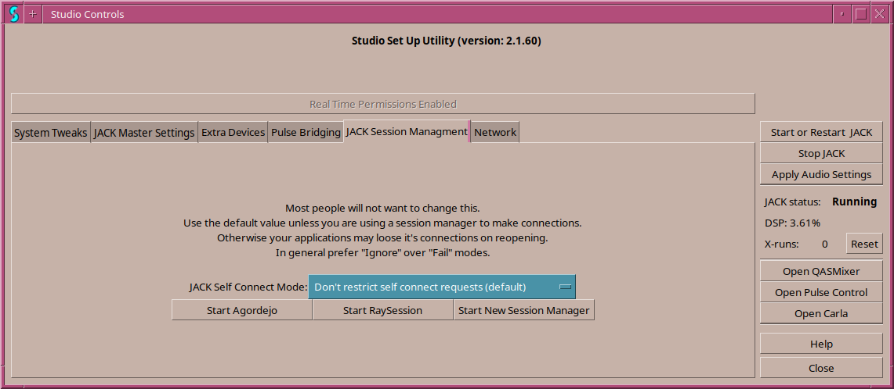

When a project uses more than one JACK application, a session manager will help by automatically starting all applications needed for a project and making any connections in JACK needed as well.
In order for the session manager to do it's job, it needs a "clean" system with no jack connections made. However, many applications auto connect on startup to the system inputs and outputs 1 and 2. Other applications will make more connections on startup. JACK provides a Self Connect Mode that can prevent an application from making these connections.
Connect Mode has five modes
There are also three convenience buttons to start session manager controls. There have been a number of session managers for Linux but the one that seems to have remained is NSM. The original Non Session Manger was a part of the non group of application but because of licensing issues was not packaged for many distributions. Development also slowed down and bugs were not being fixed. However, more applications are "NSM ready" than any other session manager. Raysession was started for this reason as a reimagined NSM controller followed by the new session manger which was non session manager ported from NTK to FLTK and with bugs fixed and some enhancement. Then Agordejo was developed as a modern graphic interface to go with new session manager.